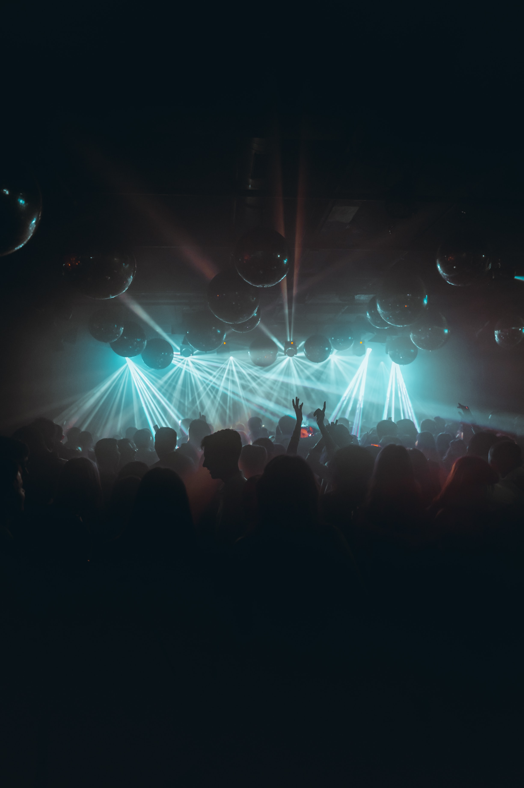

Un poco de historia
By Dj Rembrandt

Un festival que surgió casi por accidente y que
saborea el éxito desde su primera edición
Fue en las fiestas de San Pascual de 2010 cuando se celebró la primera edición de Rave Attack, un primer viernes de fiestas del pueblo. La peña 'Beu i Fuig' tuvo problemas técnicos para poder celebrar un cartel importante de dj's invitados y en Fem Festa recibimos de urgencia equipamiento de audio, bebida y los medios necesarios para celebrar el evento que nuestros compañeros no podian. Sin duda fue toda una experiencia de hermanor y fiesta que ha fijado un punto referente en cómo gestionar eventos musicales en Vila-real.
Fue en las fiestas de San Pascual de 2010 cuando se celebró la primera edición de Rave Attack, un primer viernes de fiestas del pueblo. La peña 'Beu i Fuig' tuvo problemas técnicos para poder celebrar un cartel importante de dj's invitados y en Fem Festa recibimos de urgencia equipamiento de audio, bebida y los medios necesarios para celebrar el evento que nuestros compañeros no podian. Sin duda fue toda una experiencia de hermanor y fiesta que ha fijado un punto referente en cómo gestionar eventos musicales en Vila-real.
La visita a Fem Festa tanto en las fiestas de San Pascual (mayo) como en las fiestas de Virgen de Gracia (septiembre) es siempre sinónimo de reencuentro de generaciones y grupos de juventud de Vila-real. En cuestión de minutos se puede liar una muy épica en el local.
Un poco de historia sobre Fem Festa
Fundada en 1990 por un grupo de jóvenes estudiantes
y recién iniados algunos en sus carreras
profesionales, en la actualidad cuenta con más de 50
socios. En la peña celebramos todo tipo de eventos
como cumpleaños, despedidas de solteros y como no,
las semanas de festividades de Vila-real.
Puedes celebrar tus eventos en Fem Festa si
contactas con nosotros y tenemos disponibilidad de
apertura. Algunas opciones que te ofrecemos son:
- Apertura del local en horario permitido
- Servicio de barra
- Acompañamiento / Vigilancia
- Contratación de cátering
- Contratación de decoración especial
- Contratación de equipamiento audiovisual extra
Coméntanos tus necesidades y te elaboraremos un presupuesto ajustado de forma personalizada.